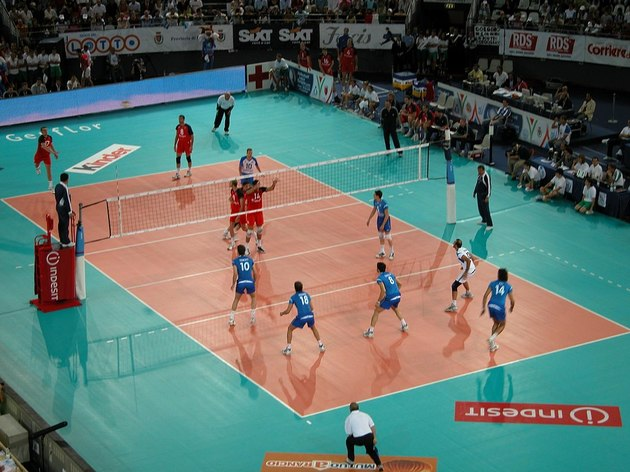

O voleibol ou vôlei é um esporte praticado entre duas equipes numa quadra retangular (aberta ou fechada). Ela é dividida por uma rede colocada verticalmente sobre a linha central. O voleibol é jogado com uma bola e inclui diversos passes com as mãos. O objetivo principal é lançar a bola por cima da rede e fazê-la tocar no chão do adversário.

O vôlei de quadra é formado por duas equipes com 6 jogadores em cada. No total, são 12 jogadores. Existem ainda 6 jogadores reserva. Além do vôlei de quadra, há também o vôlei de praia. Diferente da quadra, o de praia é jogado na areia e contém somente quatro jogadores, sendo dois de cada equipe.
Cada jogador tem uma posição dentro da quadra, a qual apresenta uma ordem de rotação:
| Final | ||||
|---|---|---|---|---|
| 27.04. | 21:30 | Funvic | Sesi | 3 : 0 |
| 23.04. | 21:30 | Sesi | Funvic | 3 : 0 |
| Simi-finais | ||||
| 13.04. | 21:30 | Sada Cruzeiro | Funvic | 2 : 3 |
| 13.04. | 19:00 | Sesi | SESC-RJ | 3 : 0 |
| 10.04. | 16:30 | SESC-RJ | Sesi | 2 : 3 |
| 09.04. | 21:30 | Funvic | Sada Cruzeiro | 3 : 2 |
| 06.04. | 21:30 | Sada Cruzeiro | Funvic | 1 : 3 |
| 06.04. | 19:00 | Sesi | SESC-RJ | 3 : 0 | Quartos-finais |
| 29.03. | 19:00 | Funvic | Volei Renata | 3 : 1 |
| 28.03. | 21:30 | Maringá | Sada Cruzeiro | 0 : 3 |
| 28.03. | 19:00 | UM Itapetininga | Sesi | 1 : 3 |
| 27.03. | 21:30 | Minas | SESC-RJ | 0 : 3 |
| 27.03. | 19:15 | Volei Renata | Funvic | 3 : 1 |
| 24.03. | 19:00 | Sada Cruzeiro | Maringá | 3 : 2 |
| 23.03. | 21:30 | Sesi | UM Itapetininga | 3 : 0 |
| 23.03. | 14:30 | SESC-RJ | Minas | 3 : 1 |
| 23.03. | 11:30 | Funvic | Volei Renata | 3 : 2 |